대기환경기사 (2019-04-27 기출문제)
1과목: 대기오염 개론
1. 지구온난화가 환경에 미치는 영향 중 옳은 것은?
- 온난화에 의한 해면상승은 지역의 특수성에 관계없이 전지구적으로 동일하게 발생한다.
- 대류권 오존의 생성반응을 촉진시켜 오존의 농도가 지속적으로 감소한다.
- 기상조건의 변화는 대기오염의 발생횟수와 오염농도에 영향을 준다.
- 기온상승과 토양의 건조화는 생물성장의 남방한계에는 영향을 주지만 북방한계에는 영향을 주지 않는다.
(정답률: 72%)

2. 대기오염모델 중 수용모델에 관한 설명으로 거리가 먼 것은?
- 기초적인 기상학적 원리를 적용, 미래의 대기질을 예측하여 대기오염제어 정책 입안에 도움을 준다.
- 입자상 물질, 가스상 물질, 가시도 문제 등 환경과학 전반에 응용할 수 있다.
- 모델의 분류로는 오염물질의 분석방법에 따라 현미경분석법과 화학분석법으로 구분할 수 있다.
- 측정자료를 입력자료로 사용하므로 시나리오 작성이 곤란하다.
(정답률: 68%)
3. 광화학반응과 관련된 오염물질 일변화의 일반적인 특징으로 가장 거리가 먼 것은?
- NO2와 HC의 반응에 의해 오후 3시경을 전후로 NO가 최대로 발생하기 시작한다.
- NO에서 NO2로의 산화가 거의 완료되고 NO2가 최고농도에 도달하는 때부터 O3가 증가되기 시작한다.
- Aldehyde는 O3생성에 앞서 반응초기부터 생성되며 탄화수소의 감소에 대응한다.
- 주요 생성물로는 PAN, Aldehyde, 과산화기 등이 있다.
(정답률: 68%)
4. 다음 중 CFCs(염화불화탄소)의 배출원과 거리가 먼 것은?
- 스프레이의 분사제
- 우레탄 발포제
- 형광등 안정기
- 냉장고의 냉매
(정답률: 69%)
5. 대기오염 농도를 추정하기 위한 상자모델에서 사용하는 가정으로 옳지 않은 것은?
- 고려되는 공간에서 오염물질의 농도는 균일하다.
- 오염물질의 배출원이 지면 전역에 균등히 분포되어 있다.
- 오염물질의 분해는 0차 반응에 의한다.
- 고려되는 공간의 수직단면에 직각방향으로 부는 바람의 속도가 일정하여 환기량이 일정하다.
(정답률: 73%)
6. 유효굴뚝높이 200m인 연돌에서 배출되는 가스량은 20m3/sec, SO2 농도는 1750ppm이다. Ky=0.07, Kz=0.09인 중립 대기조건에서 SO2의 최대 지표농도(ppb)는? (단, 풍속은 30m/sec이다.)
- 34ppb
- 22ppb
- 15ppb
- 9ppb
(정답률: 44%)
7. 해륙풍에 관한 설명으로 옳지 않은 것은?
- 육지와 바다는 서로 다른 열적 성질 때문에 주간에는 육지로부터, 야간에는 바다로부터 바람이 분다.
- 야간에는 바다의 온도 냉각율이 육지에 비해 작으므로 기압차가 생겨나 육풍이 존재한다.
- 육풍은 해풍에 비해 풍속이 작고, 수직 수평적인 범위도 좁게 나타나는 편이다.
- 해륙풍이 장기간 지속되는 경우에는 폐쇄된 국지 순환의 결과로 인하여 해안가에 공업단지 등의 산업도시가 있는 지역에서는 대기오염물질의 축적이 일어날 수 있다.
(정답률: 68%)
8. 가스상 물질의 영향에 관한 설명으로 거리가 먼 것은?
- SO2는 1ppm 정도에서도 수시간 내에 고등식물에게 피해를 준다.
- CO2독성은 10ppm 정도에서 인체와 식물에 해롭다.
- CO는 100ppm까지는 1~3주간 노출되어도 고등식물에 대한 피해는 약한 편이다.
- HCI은 SO2보다 식물에 미치는 영향이 훨씬 적으며, 한계농도는 10ppm에서 수시간 정도이다.
(정답률: 62%)
9. 열섬현상에 관한 설명으로 가장 거리가 먼 것은?
- Dust dome effect라고도 하며, 직경 10km 이상의 도시에서 잘 나타타는 현상이다.
- 도시지역 표면의 열적 성질의 차이 및 지표면에서의 증발잠열의 차이 등으로 발생된다.
- 태양의 복사열에 의해 도시에 축적된 열이 주변지역에 비해 크기 때문에 형성된다.
- 대도시에서 발생하는 기후현상으로 주변지역 보다 비가 적게 오며, 건조해져 코, 기관지 염증의 원인이 되며, 태양복사향과 관련된 비타민 C의 결핍을 초래한다.
(정답률: 70%)
10. 먼지 농도가 40μg/m3일 때 가시거리는? (단 상대습도 70%, A=1.2)
- 25km
- 30km
- 35km
- 40km
(정답률: 72%)
11. 다음 분산모델 중 미국에서 개발한 것으로 광화학모델이며, 점오염원이나 면오염원에 적용하고, 도시지역의 오염물질 이동을 계산할 수 있는 것은?
- ISCLT
- TCM
- UAM
- RAMS
(정답률: 61%)
12. 다음 중 PAN(Peroxy Acetyl Nitrate)의 구조식을 옳게 나타낸 것은?
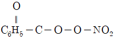
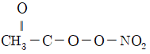
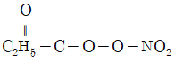
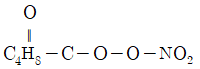
(정답률: 78%)
13. 다음은 어떤 연기 형태에 해당하는 설명인가?
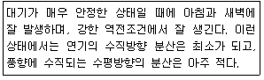
- fanning
- coning
- looping
- lofting
(정답률: 64%)
14. 아래 그림은 고도에 따른 대기의 기온 변화를 나타낸 것이다. 다음 중 대기중에 섞인 오염물질이 가장 잘 확산되는 기온변화 형태는?
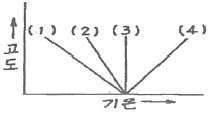
- (1)
- (2)
- (3)
- (4)
(정답률: 70%)
15. 다음 대기오염물질의 분류 중 2차 오염물질에 해당하지 않는 것은?
- NOCI
- 알데하이드
- 케톤
- N2O3
(정답률: 66%)
16. 가솔린 연료를 사용하는 차량은 엔진 가동형태에 따라 오염물질 배출량은 달라진다. 다음 중 통상적으로 탄화수소가 제일 많이 발생하는 엔진 가동형태는?
- 정속(60km/h)
- 가속
- 정속(40km/h)
- 감속
(정답률: 67%)
17. 지표부근에 존재하는 오존(O3)에 관한 설명 중 틀린 것은?
- 질소산화물과 탄화수소의 광화학적 반응에 의해 생성되며, 강력한 산화작용을 한다.
- 오존에 강한 식물로는 담배, 앨팰퍼, 무 등이 있다.
- 식물의 엽록소 파괴, 동화작용의 억제, 산소작용의 저해 등을 일으킨다.
- 식물의 피해정도는 기공의 개폐, 증산작용의 대소 등에 따라 달라진다.
(정답률: 70%)
18. Down Wash 현상에 관한 설명은?
- 원심력집진장치에서 처리가스량의 5~10%정도를 흡인하여 줌으로써 유효원심력을 증대시키는 방법이다.
- 굴뚝의 높이가 건물보다 높은 경우 건물 뒤편에 공동현상이 생기고 이 공동에 대기오염물질의 농도가 낮아지는 현상을 말한다.
- 굴뚝 아래로 오염물질이 휘날리어 굴뚝 밑 부분에 오염물질의 농도가 높아지는 현상을 말한다.
- 해가 뜬 후 지표면이 가열되어 대기가 지면으로부터 열을 받아 지표면 부근부터 역전층이 해소되는 현상을 말한다.
(정답률: 74%)
19. 가우시안 모델에 도이보딘 가정조건으로 거리가 먼 것은?
- 연기의 분산은 정상상태 분포를 가정한다.
- 바람에 의한 오염물질의 주 이동방향은 x축이며, 풍속은 일정하다.
- 연직방향의 풍속은 통상 수평방향의 풍속보다 크므로 고도변화에 따라 반영한다.
- 난류확산계수는 일정하다.
(정답률: 68%)
20. 지상으로부터 500m까지의 평균 기온감율이 0.85℃/100m이다. 100m 고도의 기온이 15℃라 하면 400m에서의 기온은?
- 13.30℃
- 12.45℃
- 11.45℃
- 10.45℃
(정답률: 71%)
2과목: 연소공학
21. 중유의 특성에 관한 설명으로 가장 거리가 먼 것은?
- 중유는 비중이 클수록 유동점, 점도가 증가한다.
- 중유는 인화점이 150℃ 이상으로 이 온도 이하에서는 인화의 위험이 적다.
- 중유의 잔류 탄소함량은 일반적으로 7~16% 정도이다.
- 점도가 낮은 것은 일반적으로 낮은 비점의 탄화수소를 함유한다.
(정답률: 56%)
22. 공기를 사용하여 propane을 완전연소 시킬 때 건조 연소가스 중의 CO2 max(%)는?
- 13.76
- 17.76
- 18.25
- 22.85
(정답률: 51%)
23. 화학반응속도 및 반응속도상수에 관한 설명으로 옳지 않은 것은?
- 1차 반응에서 반응속도상수의 단위는 s-1이다.
- 반응물의 농도를 무제한 증가할지라도 반응속도에는 영향을 미치지 않는 반응을 0차 반응이라 한다.
- 화학반응속도론에서 반응속도상수 결정에 활성화에너지가 가장 주요한 영향인자로 작용하며, 넓은 온도범위에 걸쳐 유효하게 적용된다.
- 반응속도상수는 온도에 영향을 받는다.
(정답률: 53%)
24. 착화점의 설명으로 옳지 않은 것은?
- 화학적으로 발열량이 적을수록 착화점은 낮다.
- 화학결합의 활성도가 클수록 착화점은 낮다.
- 분자구조가 복잡할수록 착화점은 낮다.
- 산소 농도가 클수록 착화점은 낮다.
(정답률: 58%)
25. 다음 중 기체연료 연소장치에 해당하지 않는 것은?
- 송풍 버너
- 선회 버너
- 방사형 버너
- 로터리 버너
(정답률: 56%)
26. 석유류의 물성에 관한 설명으로 옳지 않은 것은?
- 비중이 커지면 화염의 휘도가 커지며, 점도가 증가한다.
- 증기압이 크면 인화점 및 착화점이 높아져서 안전하지만, 연소효율은 저하된다.
- 점도가 낮아지면 인화점이 낮아지고 연소가 잘 된다.
- 유체온도를 서서히 냉각하였을 때 유체가 유동할 수 있는 최저온도를 유동점이라 하고, 일반적으로 응고점보다 2.5℃ 높은 온도를 유동점이라 한다.
(정답률: 60%)
27. 용적 100m3의 밀폐된 실내에서 황함량 0.01%인 등유 200g을 완전연소 시킬 때 실내의 평균 SO2농도(ppb)는? (단, 표준상태를 기준으로 하고, 황은 전량 SO2로 전환된다.)
- 140
- 240
- 430
- 570
(정답률: 46%)
28. 탄화도의 증가에 따른 연소특성의 변화에 대한 설명으로 옳지 않은 것은?
- 착화온도는 상승한다.
- 발열량은 증가한다.
- 산소의 양이 줄어든다.
- 연료비(고정탄소%/휘발분%)는 감소한다.
(정답률: 63%)
29. 다음 중 연료 연소 시 공기비가 이론치보다 작을 때 나타나는 현상으로 가장 적합한 것은?
- 완전연소로 연소실내의 열손실이 작아진다.
- 배출가스 중 일산화탄소의 양이 많아진다.
- 연소실벽에 미연탄화물 부착이 줄어든다.
- 연소효율이 증가하여 배출가스의 온도가 불규칙하게 증가 및 감소를 반복한다.
(정답률: 66%)
30. 탄소 85%, 수소 15%된 경유(1kg)를 공기과잉계수 1.1로 연소했더니 탄소 1%가 검댕(그을음)으로 된다. 건조 배기가스 1Sm3중 검댕의 농도(g/Sm3)는?
- 약 0.72
- 약 0.86
- 약 1.72
- 약 1.86
(정답률: 36%)
31. 다음 연료의 연소 시 이론공기량의 개략치(Sm3/kg)가 가장 큰 것은?
- LPG
- 고로가스
- 발생로가스
- 석탄가스
(정답률: 50%)
32. 유압분무식 버너의 특징과 거리가 먼 것은?
- 유량조절범위가 1:10 정도로 넓어서 부하변동에 적응이 쉽다.
- 연료분사범위는 15~2000L/h 정도이다.
- 연료의 점도가 크거나 유압이 5kg/cm2 이하가 되면 분무화가 불량하다.
- 구조가 간단하여 유지 및 보수가 용이한 편이다.
(정답률: 64%)
33. 9000kcal/kg의 열량을 내는 석탄을 시간당 80kg 연소하는 보일러가 있다. 실제로 이 보일러에서 시간당 흡수된 열량이 600000kcal라면 이 보일러의 열효율(%)은?
- 66.7
- 75.0
- 83.3
- 90.0
(정답률: 61%)
34. 저위발열량이 7000kcal/Sm3의 가스연료의 이론연소온도(℃)는? (단, 이론연소가스량은 10m3/Sm3, 연료연소가스의 평균 정압비열은 0.35kcal/Sm3℃, 기준온도는 15℃, 지금 공기는 예열되지 않으며, 연소가스는 해리되지 않음)
- 1515
- 1825
- 2015
- 2325
(정답률: 60%)
35. 폐열회수장치가 설치된 소각로의 특징에 관한 설명으로 거리가 먼 것은? (단, 폐열회수를 안하는 소각로와 비교)
- 연소가스 배출 부분과 수증기 보일러관에서 부식의 염려가 없다.
- 열 회수 연소가스의 온도와 부피를 줄일 수 있다.
- 공기와 연소가스의 양이 비교적 적으므로 용량이 작은 송풍기를 쓸 수 있다.
- 수증기 생산을 위한 수냉로벽, 보일러 등 설비가 필요하다.
(정답률: 58%)
36. 기체연료의 연소방식과 연소장치에 관한 설명으로 옳지 않은 것은?
- 확산연소는 주로 탄화수소가 적은 발생로가스, 고로가스 등에 적용되는 연소방식이다.
- 예혼합연소는 화염온도가 낮아 국부가열의 염려가 없고 연소부하가 작은 경우 사용이 가능하며, 화염의 길이가 길다.
- 저압버너는 역화방지를 위해 1차 공기량을 이론공기량의 약 60% 정도만 흡입하고 2차 공기로는 로내의 압력을 부압(-)으로 하여 공기를 흡인한다.
- 예혼합연소에 사용되는 버너에는 저압버너, 고압버너, 송풍버너 등이 있다.
(정답률: 64%)
37. A 기체연료 2Sm3을 분석한 결과 C3H8 1.7Sm3, CO 0.15Sm3, H2 0.14Sm3, O2 0.01Sm3였다면 이 연료를 완전연소 시켰을 때 생성되는 이론 습연소가스량(Sm3)은?
- 약 41Sm3
- 약 45Sm3
- 약 52Sm3
- 약 57Sm3
(정답률: 38%)
38. CH4:30%, C2H6:30%, C3H8:40%인 혼합가스의 폭발범위로 가장 적합한 것은? (단, 르샤틀리에의 식 적용)
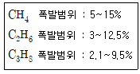
- 약 2.9~11.6%
- 약 3.7~13.8%
- 약 4.9~14.6%
- 약 5.8~15.4%
(정답률: 59%)
39. 미분탄연소의 특징에 관한 설명으로 거리가 먼 것은?
- 부하변동에 대한 응답성이 좋은 편이어서 대용량의 연소에 적합하다.
- 화격자연소보다 낮은 공기비로서 높은 연소효율을 얻을 수 있다.
- 분무연소와 상이한 점은 가스화 속도가 빠르고, 화염이 연소실 중앙부에 집중하여 명료한 화염면이 형성된다는 것이다.
- 석탄의 종류에 따른 탄력성이 부족하고, 로벽 및 전열면에서 재의 퇴적이 많은 편이다.
(정답률: 48%)
40. Butane 2kg을 표준상태에서 완전연소 시키는데 필요한 이론산소의 양(kg)은?
- 3.59
- 5.02
- 7.17
- 11.17
(정답률: 53%)
3과목: 대기오염 방지기술
41. 사이클론의 반경이 50cm인 원심력 집진장치에서 입자의 집선방향속도가 10m/sec 이라면 분리계수는?
- 10.2
- 20.4
- 34.5
- 40.9
(정답률: 45%)
42. 유해가스의 물리적 흡착에 관한 설명으로 옳지 않은 것은?
- 온도가 낮을수록 흡착량은 많다.
- 흡착제에 대한 용질의 분압이 높을수록 흡착량이 증가한다.
- 가역성이 높고 여러 층의 흡착이 가능하다.
- 흡착열이 높고, 분자량이 작을수록 잘 흡착된다.
(정답률: 53%)
43. 시간당 5톤의 중유를 연소하는 보일러의 배기가스를 수산화나트륨 수용액으로 세정하여 탈황하고 부산물로 아황산나트륨을 회수하려고 한다. 중유 중 황(S)함량이 2.56%, 탈활장치의 탈황효율이 87.5%일 때, 필요한 수산화나트륨의 이론량은 시간당 몇 kg인가?(오류 신고가 접수된 문제입니다. 반드시 정답과 해설을 확인하시기 바랍니다.)
- 300kg
- 280kg
- 250kg
- 225kg
(정답률: 48%)
44. 암모니아의 농도가 용적비로 200ppm인 실내공기를 송풍기로 환기시킬 때 실내용적이 4000m3고, 송풍량이 100m3min이면 농도를 20ppm으로 감소시키기 위해 소요되는 시간은?
- 82min
- 92min
- 102min
- 112min
(정답률: 38%)
45. 다음 중 (CH3)CHCH2CHO의 냄새특성으로 가장 적합한 것은?
- 양파, 양배추 썩는 냄새
- 분뇨 냄새
- 땀냄새
- 자극적이며, 새콤하고 타는 듯한 냄새
(정답률: 68%)
46. 냄새물질에 관한 다음 설명 중 가장 거리가 먼 것은?
- 물리화학적 자극량과 인간의 감각강도 관계는 Ranney 법칙과 잘 맞다.
- 골격이 되는 탄소(C)수는 저분자일수록 관능기 특유의 냄새가 강하고 자극적이며, 8~13에서 가장 향기가 강하다.
- 분자내 수산기의 수는 1개 일 때 가장 강하고 수가 증가하면 약해져서 무취에 이른다.
- 불포화도가 높으면 냄새가 보다 강하게 난다.
(정답률: 59%)
47. 유해가스의 연소처리에 관한 설명으로 가장 거리가 먼 것은?
- 직접연소법은 경우에 따라 보조연료나 보조공기가 필요하며, 대체로 오염물질의 발열량이 연소에 필요한 전체 열량의 50% 이상일 때 경제적으로 타당하다.
- 직접연소법은 after burner법이라고도 하며, HC, H2, NH3, HCN 및 유독가스 제거법으로 사용한다.
- 가열연소법은 배가가스 중 가연성 오염물질의 농도가 매우 높아 직접연소법으로 불가능할 경우에 주로 사용되고 조업의 유동성이 적어 NOx 발생이 많다.
- 가열연소법에서 연소로 내의 체류시간은 0.2~0.8초 정도이다.
(정답률: 45%)
48. 탈취방법에 관한 설명으로 옳지 않은 것은?
- BALL 차단법은 밀폐형 구조물을 설치할 필요가 없고, 크기와 색상이 다양한 편이다.
- 약액세정법은 조작이 복잡하고, 대상 악취물질에 대한 제한성이 크지만, 산성가스 및 염기성 가스의 별도 처리가 필요하지 않다.
- 산화법 중 염소주입법은 페놀이 다량 함유되었을 때에는 클로로페놀을 형성하여 2차 오염문제를 발생시킨다.
- 수세법은 수온 변화에 따라 탈취효과가 변하고, 처리풍향 및 압력손실이 크다.
(정답률: 57%)
49. 흡수에 관한 설명으로 옳지 않은 것은?
- 가스측 경막저항은 흡수액에 대한 유해가스의 농도가 클 때 경막저항을 지배하고, 반대로 액측 경막저항은 용해도가 작을 때 지배한다.
- 대기오염물질은 보통 공기 중에 소량 포함되어 있고, 유해가스의 농도가 큰 흡수제를 사용하므로 가스측 경막저항이 주로 지배한다.
- Baker는 평형선과 조작선을 사용하여 NTU를 결정하는 방법을 제안하였다.
- 충전탑의 조건이 평형곡선에서 멀어질수록 흡수에 대한 추진력은 더 작아지며, NTU는 Berl number에 의해 지배된다.
(정답률: 41%)
50. 여과집진장치에 사용되는 각종 여과재의 성질에 관한 연결로 가장 거리가 먼 것은? (단, 여과재의 종류-산에 대한 저항성-최고사용온도)
- 목면-양호-150℃
- 글라스화이버-양호-250℃
- 오론-양호-150℃
- 비닐론-양호-100℃
(정답률: 64%)
51. 직경이 15cm인 원형관에서 층류로 흐를 수 있게 임계 레이놀게수를 2100으로 할 때, 최대 평균유속(cm/sec)은? (단, ν=1.8×10-6m2/sec)
- 1.52
- 2.52
- 4.59
- 6.74
(정답률: 55%)
52. 덕트설치 시 주요원칙으로 거리가 먼 것은?
- 공기가 아래로 흐르도록 하향구배를 만든다.
- 구부러짐 전후에는 청소구를 만든다.
- 밴드는 가능하면 완만하게 구부리며, 90°는 피한다.
- 덕트는 가능한 한 길게 배치하도록 한다.
(정답률: 68%)
53. 전기집진장치에서 비저항과 관련된 내용으로 옳지 않은 것은?
- 배연설비에서 연료에 S함유량이 많은 경우는 먼지의 비저항이 낮아진다.
- 비저항이 낮은 경우에는 건식 전기집진장치를 사용하거나, 암모니아 가스를 주입한다.
- 1011~1013Ωㆍcm범위에서는 역전리 또는 역이온화가 발생한다.
- 비저항이 높은 경우는 분진층의 전압손실이 일정하더라도 가스상의 전압손실이 감소하게 되므로, 전류는 비저항의 증가에 따라 감소된다.
(정답률: 47%)
54. 설치 초기 전기집진장치의 효율이 98%였으나, 2개월 후 성능이 96%로 떨어졌다. 이 때 먼지 배출농도는 설치 초기의 몇 배인가?
- 2배
- 4배
- 8배
- 16배
(정답률: 51%)
55. 다음 입자상 물질의 크기를 결정하는 방법 중 입자상 물질의 그림자를 2개의 등면적으로 나눈 선의 길이를 직경으로 하는 입경은?
- 마틴직경
- 스톡스직경
- 피렛직경
- 투영면직경
(정답률: 70%)
56. 유해가스에 대한 설명 중 가장 거리가 먼 것은?
- Cl2가스는 상온에서 황록색을 띤 기체이며 자극성 냄새를 가진 유독물질로 관련 배출원은 표백공업이다.
- F2는 상온에서 무색의 발연성 기체로 강한 자극성이며 물에 잘 녹고 배출원은 알루미늄 제련공업이다.
- SO2는 무색의 강한 자극성 기체로 환원성 표백제로도 이용되고 화석연료의 연소에 의해서도 발생한다.
- NO는 적갈색의 특이한 냄새를 가진 물에 잘 녹는 맹독성 기체로 자동차배출이 가장 많은 부분을 차지한다.
(정답률: 61%)
57. 가스 1m3당 50g의 아황산가스를 포함하는 어떤 폐가스를 흡수 처리하기 위하여 가스 1m3에 대하여 순수한 물 2000kg의 비율로 연속 항류 접촉시켰더니 폐가스 내 아황산가스의 농도가 1/10로 감소하였다. 물 1000kg에 흡수된 아황산가스의 양(g)은?
- 11.5
- 22.5
- 33.5
- 44.5
(정답률: 50%)
58. 흡착장치에 관한 다음 설명 중 가장 거리가 먼 것은?
- 고정층 흡착장치에서 보통 수직으로 된 것은 대규모에 적합하고, 수평으로 된 것은 소규모에 적합하다.
- 일반적으로 이동층 흡착장치는 유동층 흡착장치에 비해 가스의 유속을 크게 유지할 수 없는 단점이 있다.
- 유동층 흡착장치는 고정층과 이동층 흡착장치의 장점만을 이용한 복합형으로 고체와 기체의 접촉을 좋게 할 수 있다.
- 유동층 흡착장치는 흡착제의 유동에 의한 마모가 크게 일어나고, 조업조건에 따른 주어진 조건의 변동이 어렵다.
(정답률: 57%)
59. Bag filter에서 먼지부하가 360g/m2일 때마다 부착먼지를 간헐적으로 탈락시키고자 한다. 유입가스 중의 먼지농도가 10g/m3이고, 겉보기 여과속도가 1cm/sec일 때 부착먼지의 탈락시간 간격은? (단, 집진율은 80%이다.)
- 약 0.4hr
- 약 1.3hr
- 약 2.4hr
- 약 3.6hr
(정답률: 47%)
60. 원심력 집진장치에서 압력손실의 감소 원인으로 가장 거리가 먼 것은?
- 장치 내 처리가스가 선회되는 경우
- 호퍼 하단 부위에 외기가 누입될 경우
- 외통의 접합부 불량으로 함진가스가 누출될 경우
- 내통이 마모되어 구멍이 뚫려 함진가스가 by pass될 경우
(정답률: 64%)
4과목: 대기오염 공정시험기준(방법)
61. 다음은 시험의 기재 및 용어에 관한 설명이다. ()안에 알맞은 것은?
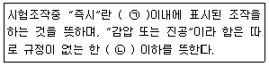
- ㉠ 10초, ㉡ 15mmH2O
- ㉠ 10초, ㉡ 15mmHg
- ㉠ 30초, ㉡ 15mmH2O
- ㉠ 30초, ㉡ 15mmHg
(정답률: 64%)
62. 굴뚝 배출가스 중 시안화수소를 질산은적정법으로 분석할 때 필요한 시약으로 거리가 먼 것은?(관련 규정 개정전 문제로 여기서는 기존 정답인 3번을 누르면 정답 처리됩니다. 자세한 내용은 해설을 참고하세요.)
- p-다이메틸아미노벤질리덴로다닌의 아세톤 용액
- 아세트산(99.7%)(부피분율 10%)
- 메틸레드-메틸렌 블루우 혼합지시약
- 수산화소듐 용액(질량분율 2%)
(정답률: 52%)
63. 대기오염공정시험기준상 굴뚝 배출가스 중 불화수소를 연속적으로 자동 측정하는 방법은?
- 자외선형광법
- 이온전극법
- 적외선흡수법
- 자외선흡수법
(정답률: 46%)
64. 다음은 굴뚝 배출가스 중의 이황화탄소 분석방법에 관한 설명이다. ()안에 알맞은 것은?
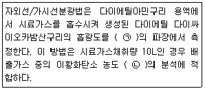
- ㉠ 340nm, ㉡ 0.⑤~1ppm
- ㉠ 340nm, ㉡ 3~60ppm
- ㉠ 435nm, ㉡ 0.⑤~1ppm
- ㉠ 435nm, ㉡ 3~60ppm
(정답률: 53%)
65. 자외선/가시선분광법에 관한 설명으로 옳지 않은 것은?
- 실효물질 등에 적당한 시약을 넣어 발색시킨 용액의 흡광도를 측정하여 시료중의 목적성분을 정량하는 방법으로 파장 200nm~1200nm에서의 액체 흡광도를 측정한다.
- 일반적으로 광원으로 나오는 빛을 단색화장치(monochrometer) 또는 필터(filter)에 의하여 좁은 파장범위의 빛만을 선택하여 액층을 통과시킨 다음 광전측광으로 흡광도를 측정하여 목적성분의 농도르 정량하는 방법이다.
- (투사광의 강도/입사광의 강도)를 투과도(t)라 하며, 투과도(t)의 상용대수를 흡광도라 한다.
- 광원부-파장선택부-시료부-측광부로 구성되어 있고, 가시부와 근적외부의 광원으로는 주로 텅스텐램프를 사용한다.
(정답률: 50%)
66. 이온크로마토그래피에 관한 설명으로 옳지 않은 것은?
- 분리관의 재질은 용리액 및 시료액과 반응성이 큰 것을 선택하며 스테인레스관이 널리 사용된다.
- 용리액조는 일반적으로 폴리에틸렌이나 경질 유리제를 사용한다.
- 송액펌프는 일반적으로 맥동이 적은 것을 사용한다.
- 검출기는 일반적으로 전도도 검출기를 많이 사용하고, 그 외 자외선, 가시선 흡수검출기(UV, VIS 검출기), 전기화학적 검출기 등이 사용된다.
(정답률: 57%)
67. 다음은 비분산적외선분광분석기의 성능기준이다. ()안에 알맞은 것은?
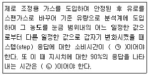
- ㉠ 10초 이내, ㉡ 30초 이내
- ㉠ 10초 이내, ㉡ 40초 이내
- ㉠ 1초 이내, ㉡ 30초 이내
- ㉠ 1초 이내, ㉡ 40초 이내
(정답률: 55%)
68. 원자흡수분광광도법에 사용되는 용어의 정의로 옳지 않은 것은?
- 분무실(Nebulizrer-Chamber):분무기와 함께 분무된 시료용액의 미립자를 더욱 미세하게 해주는 한편 큰 입자와 분리시키는 작용을 갖는 장치
- 선프로파일(Line Profile):파장에 대한 스펙트럼선의 강도를 나타내는 곡선
- 예복합 버너(Premix Type Burner):가연성 가스, 조연성 가스 및 시료를 분무실에서 혼합시켜 불꽃 중에 넣어주는 방식의 버너
- 근접선(Neighbouring Line):원자가 외부로부터 빛을 흡수했다가 다시 먼저 상태로 돌아갈 때 방사하는 스펙트럼선
(정답률: 67%)
69. 비산먼지의 농도를 구하기 위해 측정한 조건 및 결과가 다음과 같을 때 비산먼지의 농도(mg/m3)는?
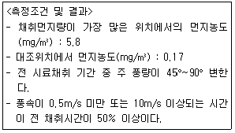
- 5.6
- 6.8
- 8.1
- 10.1
(정답률: 52%)
70. 수산화쇼듐(NaOH)용액을 흡수액으로 사용하는 분석대상가스가 아닌 것은?
- 염화수소
- 시안화수소
- 불소화합물
- 벤젠
(정답률: 62%)
71. 기체크로마토그래피에 관한 설명으로 옳지 않은 것은?
- 기체시료 또는 기화한 액체나 고체시료를 운반가스에 의하여 분리, 관내에 전개, 응축시켜 액체상태로 각 성분을 분리 분석한다.
- 일반적으로 대기의 무기물 또는 유기물의 대기오염 물질에 대한 정성, 정량분석에 이용된다.
- 일정유량으로 유지되는 운반가스는 시료도입부로부터 분리관내를 흘러서 검출기를 통해 외부로 방출된다.
- 시료도입부로부터 기체, 액체 또는 고체시료를 도입하면 기체는 그대로, 액체나 고체는 가열기화되어 운반가스에 의하여 분리관내로 송입된다.
(정답률: 46%)
72. 분석대상가스별 흡수액으로 잘못 짝지어진 것은?
- 암모니아-붕산용액(질량분율 0.5%)
- 비소-수산화소듐용액(질량분율 0.4%)
- 브롬화합물-수산화소듐용액(질량분율 0.4%)
- 질소산화물-수산화소듐용액(질량분율 0.4%)
(정답률: 45%)
73. 화학분석 일반사항에 관한 설명으로 옳지 않은 것은?
- 1억분율은 ppm, 10억분율은 pphm으로 표시한다.
- 실온은 1~35℃로 하고, 찬 곳을 따로 규정이 없는 한 0~15℃의 곳을 뜻한다.
- “냉후”(식힌 후)라 표시되어 있을 때는 보온 또는 가열 후 실온까지 냉각된 상태를 뜻한다.
- 액의 농도를 (1→2), (1→5) 등으로 표시한 것을 그 용질의 성분이 고체일 때는 1g을, 액체일 때는 1mL를 용매에 녹여 전량을 각각 2mL 또는 5mL로 하는 비율을 뜻한다.
(정답률: 69%)
74. 굴뚝 배출가스 중 폼알데하이드를 정량할 때 쓰이는 흡수액은?
- 아세틸아세톤 함유 흡수액
- 아연아민착염 함유 흡수액
- 질산암모늄+황산(1+5)
- 수산화소듐용액(0.4W/V%)
(정답률: 48%)
75. 대기오염공정기준에 의거, 환경대기 중 각 항목별 분석 방법으로 옳지 않은 것은?
- 질소산화물-살츠만법
- 옥시던트-광산란법
- 탄화수소-비메탄 탄화수소 측정법
- 아황산가스-파라로자닐린법
(정답률: 56%)
76. 다음은 연료용 유류 중의 황함유량을 연소관식 공기법으로 분석하는 방법이다. ()안에 알맞은 것은?
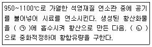
- ㉠ 과산화수소(3%), ㉡ 수산화칼륨표준액
- ㉠ 과산화수소(3%), ㉡ 수산화소듐표준액
- ㉠ 10% AgNO3, ㉡ 수산화칼륨표준액
- ㉠ 10% AgNO3, ㉡ 수산화소듐표준액
(정답률: 56%)
77. 고용량공기시료채취기로 비산먼지를 채취하고자 한다. 측정결과가 다음과 같을 때 비산먼지의 농도는?(오류 신고가 접수된 문제입니다. 반드시 정답과 해설을 확인하시기 바랍니다.)
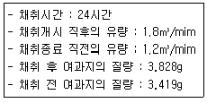
- 0.13mg/m3
- 0.19mg/m3
- 0.25mg/m3
- 0.35mg/m3
(정답률: 35%)
78. 기체-고체 크로마토그래피법에서 사용하는 흡착형 충전물과 거리가 먼 것은?
- 알루미나
- 활성탄
- 담체
- 실리카겔
(정답률: 58%)
79. A도시면적이 150km2이고 인구밀도가 4000명/km2이며 전국 평균 인구밀도가 800명/km2일 때, 인구비례에 의한 방법으로 결정한 A도시의 환경기준 시험을 위한 시료 측정점수는? (단, A도시면적은 지역의 가주지 면적(총면적에서 전답, 호수, 임야, 하천 등의 면적을 뺀 면적이다,)
- 30
- 35
- 40
- 45
(정답률: 49%)
80. 굴뚝 배출가스 중 불꽃이온화검출기에 의한 총탄화수소 측정에 관한 설명으로 옳지 않은 것은?
- 결과 농도는 프로판 또는 탄소등가농도로 환산하여 표시한다.
- 배출원에서 채취된 시료는 여과지 등을 이용하여 먼지를 제거한 후 가열채취관을 통하여 불꽃이온화분석기로 유입되어 분석된다.
- 반응시간은 오염물질농도의 단계변화에 따라 최종값의 50% 이상에 도달하는 시간을 말한다.
- 시료채취관은 스테인리스강 또는 이와 동등한 재질의 것으로 하고 굴뚝중심 부분의 10%범위 내에 위치할 정도의 길이의 것을 사용한다.
(정답률: 61%)
5과목: 대기환경관계법규
81. 실내공기질 관리법규상 건축자재의 오염물질방출 기준이다. ()안에 알맞은 것은? (단, 단위는 mg/m2ㆍh)
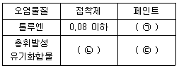
- ㉠ 0.02 이하, ㉡ 0.⑤ 이하, ㉢ 1.5 이하
- ㉠ 0.02 이하, ㉡ 0.1 이하, ㉢ 2.0 이하
- ㉠ 0.08 이하, ㉡ 2.0 이하, ㉢ 2.5 이하
- ㉠ 0.10 이하, ㉡ 2.5 이하, ㉢ 4.0 이하
(정답률: 52%)
82. 대기환경보전법규상 자동차의 종류에 대한 설명으로 옳지 않은 것은? (단, 2015년 12월 10일 이후 적용)
- 이륜자동차의 규모는 차량총중량이 1천킬로그램을 초과하지 않는 것이다.
- 이륜자동차는 측차를 붙인 이륜자동차와 이륜자동차에서 파생된 삼륜 이상의 자동차는 제외한다.
- 소형화물자동차에는 승용자동차에 해당되지 않는 승차인원이 9명 이상인 승합차를 포함한다
- 초대형 승용자동차의 규모는 차량총중량이 15톤 이상이다.
(정답률: 61%)
83. 환경정책기본법령상 초미세먼지(PM-2.5)의 연간 평균치 기준은?
- 15μg/m3 이하
- 35μg/m3 이하
- 50μg/m3 이하
- 100μg/m3 이하
(정답률: 46%)
84. 대기환경보전법규상 휘발유를 연료로 사용하는 자동차연료 제조기준으로 옳지 않은 것은?
- 90% 유출온도(℃):170 이하
- 산소함량(무게%):2.3 이하
- 황함량(ppm):50 이하
- 벤젠함량(부피%):0.7 이하
(정답률: 49%)
85. 대기환경보전법령상 배출허용 기준초과와 관련한 개선명령을 받은 사업자는 그 명령을 받은 날부터 며칠 이내에 개선계획서를 환경부령으로 정하는 바에 따라 시ㆍ도지사에게 제출하여야 하는가? (단, 연장이 없는 경우)
- 즉시
- 10일 이내
- 15일 이내
- 30일 이내
(정답률: 41%)
86. 대기환경보전법규상 환경부장관이 대기오염물질을 총량으로 규제하고자 할 때 고시해야 하는 사항으로 거리가 먼 것은? (단, 기타사항은 제외)
- 총량규제규역
- 총량규제 대기오염물질
- 대기오염물질의 저감계획
- 규제기준농도
(정답률: 43%)
87. 다음은 대기환경보전법규상 자가측정 자료의 보존기간(기준)이다. ()안에 가장 적합한 것은?
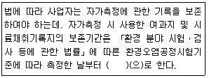
- 1개월
- 3개월
- 6개월
- 1년
(정답률: 60%)
88. 실내공기질 관리법령의 적용대상이 되는 다중이용시설 중 대통령령이 정하는 규모기준으로 옳지 않은 것은?
- 항만시설 중 연면적 5천제곱미터 이상인 대합실
- 연면적 1천제곱미터 이상인 실내주차장(기계식 주차장을 포함한다.)
- 모든 대규모점포
- 연면적 430제곱미터 이상인 국공립어린이집, 법인어린이집, 직장어린이집 및 민간어린이집
(정답률: 59%)
89. 대기환경보전법규상 대기환경규제지역을 관할하는 시ㆍ도지사 등이 해당 지역의 환경기준을 달성, 유지하기 위해 수립하는 실천계획에 포함될 사항과 거리가 먼 것은?
- 대기오염측정결과에 따른 대기오염기준 설정
- 계획달성연도의 대기질 예측결과
- 대기보전을 위한 투자계획과 오염물질 저감효과를 고려한 경제성 평가
- 대기오염원별 대기오염물질 저감계획 및 계획의 시행을 위한 수단
(정답률: 34%)
90. 대기환경보전법령상 오염물질의 초과부과금 산정 시 위반횟수별 부과계수 산출방법이다. ()안에 알맞은 것은?
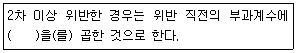
- 100분의 100
- 100분의 1⑤
- 100분의 110
- 100분의 120
(정답률: 61%)
91. 대기환경보전법규상 대기오염방지시설과 가장 거리가 먼 것은?
- 미생물을 이용한 처리시설
- 촉매반응을 이용하는 시설
- 흡수에 의한 시설
- 확산에 의한 시설
(정답률: 53%)
92. 대기환경보전법상 황함유기준을 초과하는 연료를 공급ㆍ판매한 자에 대한 벌칙기준으로 옳은 것은?
- 5년 이하의 징역이나 5천만원 이하의 벌금
- 3년 이하의 징역이나 3천만원 이하의 벌금
- 2년 이하의 징역이나 2천만원 이하의 벌금
- 1년 이하의 징역이나 1천만원 이하의 벌금
(정답률: 38%)
93. 대기환경보전법규상 배출시설에서 배출되는 입자상물질인 아연화합물(Zn로서)의 배출허용기준은? (단, 모든 배출시설)
- 5mg/Sm3 이하
- 10mg/Sm3 이하
- 15mg/Sm3 이하
- 20mg/Sm3 이하
(정답률: 38%)
94. 대기환경보전법상 사용하는 용어의 정의로 옳지 않은 것은?
- “검댕”이란 연소할 때에 생기는 유리(遊離) 탄소가 응결하여 입자의 지름이 1미크론 이상이 되는 입자상물질을 말한다.
- “온실가스 평균배출량”이란 자동차제작자가 판매한 자동차 중 환경부령으로 정하는 자동차의 온실가스 배출량의 합계를 해당 자동차 총 대수로 나누어 산출한 평균값(g/km)을 말한다.
- “온실가스”란 적외선 복사열을 흡수하거나 다시 방출하여 온실효과를 유발하는 대기 중의 가스상태 물질로서 이산화탄소, 메탄, 아산화질소, 수소불화탄소, 과불화탄소, 육불화황을 말한다.
- “냉매(冷媒)”란 열전달을 통한 냉난방, 냉동ㆍ냉장 등의 효과를 목적으로 사용되는 물질로서 산업통상자원부령으로 정하는 것을 말한다.
(정답률: 52%)
95. 다음은 대기환경보전법규상 휘발성유기화합물 배출 억제ㆍ방지시설 설치 및 검사ㆍ측정결과의 기록보존에 관한 기준 중 주유소 저장시설에 관한 기중이다. ()안에 알맞은 것은?
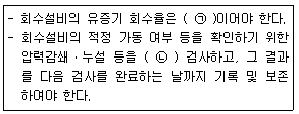
- ㉠ 75% 이상, ㉡ 1년마다
- ㉠ 75% 이상, ㉡ 2년마다
- ㉠ 90% 이상, ㉡ 1년마다
- ㉠ 90% 이상, ㉡ 2년마다
(정답률: 48%)
96. 대기환경보전법규상 위임업무 보고사항 중 보고횟수가 연 1회인 것은?
- 자동차 연료 제조ㆍ판매 또는 사용에 대한 규제현황
- 수입자동차 배출가스 인증 및 검사현황
- 측정기기 관리대행업의 등록, 변경등록 및 행정처분 현황
- 환경오염사고 발생 및 조치사항
(정답률: 48%)
97. 대기환경보전법령상 Ⅱ지역의 기본부과금의 지역별 부과계수로 옳은 것은? (단, Ⅱ지역은「국토의 계획 및 이용에 관한 법률」에 따른 공업지역 등이 해당)
- 0.5
- 1.0
- 1.5
- 2.0
(정답률: 54%)
98. 악취방지법상에서 사용하는 용어의 뜻으로 옳지 않은 것은?
- “상승악취”란 두 가지 이상의 악취물질이 함께 작용하여 사람의 후각을 자극하여 불쾌감과 혐오감을 주는 냄새를 말한다.
- “악취배출시설”이란 악취를 유발하는 시설, 기계, 기구, 그 밖의 것으로서 환경부장관이 관계 중앙행정기관의 장과 협의하여 환경부령으로 정하는 것을 말한다.
- “악취”란 황하수소, 메르캅탄류, 아민류, 그 밖에 자극성이 있는 물질이 사람의 후각을 자극하여 불쾌감과 혐오감을 주는 냄새를 말한다.
- “지정악취물질”이란 악취의 원인이 되는 물질로서 환경부령으로 정하는 것을 말한다.
(정답률: 61%)
99. 대기환경보전법령상 대기오염물질발생량의 합계가 연간 25톤인 사업장에 해당하는 것은? (단, 기타사항 제외)
- 1종 사업장
- 2종 사업장
- 3종 사업장
- 4종 사업장
(정답률: 65%)
100. 다음은 대기환경보전법령상 시ㆍ도지사가 배출시설의 설치를 제한할 수 있는 경우이다. ()안에 알맞은 것은?
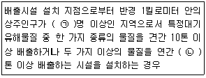
- ㉠ 1만, ㉡ 20
- ㉠ 2만, ㉡ 20
- ㉠ 1만, ㉡ 25
- ㉠ 2만, ㉡ 25
(정답률: 67%)